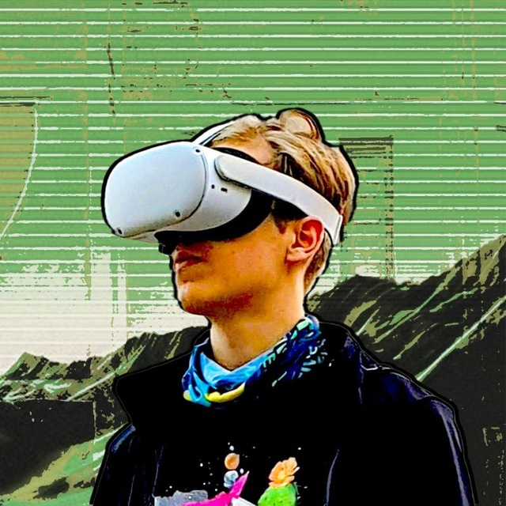

Page link copied!
Tim Voronkin
My social media links
Instagram - me
Instagram - my metal artworks
Artstation - my VR projects
Telegram - write me
LinkedIn
Facebook
X
YouTube
Discord - visit my virtual spaces
voronkintim@gmail.com